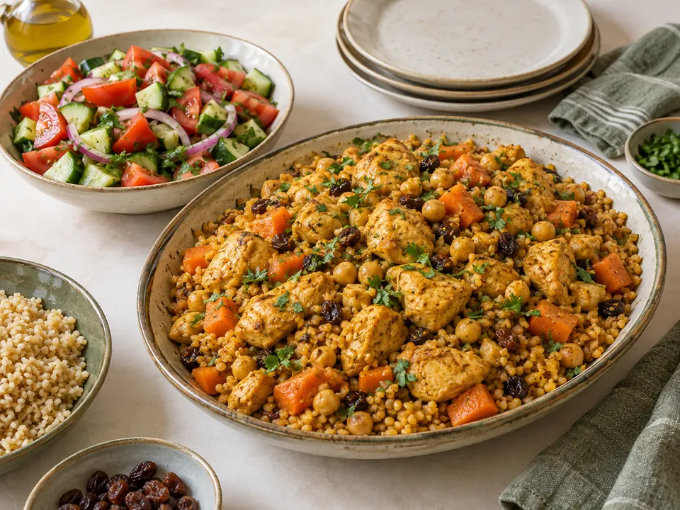

עוףעוף ובורגול בטעמים מרוקאיים
עם חומוס, גזר, מעט צימוקים וסלט טרי
₪10.1–12.6לסועד · אומדן לכמויות במתכון
למתכון המלא ←תבשיל כתום עם תרד, אורז וסלט מלפפונים
5 סועדים: כ־₪8.2 לאדם · 4 סועדים: כ־₪10.2 לאדם
אומדן לעלות הכמויות במתכון, כולל שמן ותבלינים. איך חושב המחיר?
קוצצים בצל, גזר ועגבניות. מחממים כף שמן בסיר ומטגנים בצל וגזר 5 דקות. מוסיפים שום וקארי ומערבבים חצי דקה.
מוסיפים עדשים שטופות, עגבניות, קוקוס וכוס וחצי מים. מביאים לרתיחה עדינה, מתבלים ומבשלים 15 דקות תוך ערבוב מדי פעם.
מוסיפים חומוס מבושל ותרד ומבשלים עוד 10 דקות עד שהעדשים רכות והחומוס חם. מוסיפים מים לפי הצורך ומסיימים במיץ מחצי לימון.
מבשלים את האורז לפי הוראות האריזה. פורסים מלפפונים ומתבלים בכף שמן, הלימון שנותר ומלח. מגישים אורז, קארי וסלט.
קופסת קוקוס אחת מתבלת סיר שלם של קטניות וירקות. אין צורך במחית קארי מיוחדת או ברשימה ארוכה של תבלינים.
שני סוגי קטניות, אורז, תרד, גזר וסלט מלפפונים.
אלרגנים מרכזיים במתכון: בדקו את תוויות המוצרים שבחרתם. יש לבדוק גם את תוויות המוצרים, התחליפים והתבלינים.
במתכונים עם חומוס ושעועית משתמשים בקטניות שכבר בושלו, לא בקטניות יבשות ללא בישול. זמני ההכנה אינם כוללים הפשרה או בישול מוקדם שלהן.

עוףעם חומוס, גזר, מעט צימוקים וסלט טרי
 עוף
עוףארוחת תנור זהובה עם סלט ישראלי קצוץ
רצועות עוף עם כרוב, גזר ופלפל ברוטב סויה וג׳ינג׳ר